India Healthcare & Pharma Pulse — 15 September 2026
A focused view of price trends, valuations, market breadth and pullbacks across India's healthcare and pharmaceutical indices.
Contents
- Market at a Glance
- Nifty 500 Healthcare
- Nifty Healthcare
- Nifty Pharma
- Market Breadth by Index
- Sources
- Disclaimer
Market at a Glance
A compact comparison of indices.
- Free-float market cap: The value of shares available for public trading. Each value includes its source date in the index section below.
- 3Y P/E position: Compares today's P/E with the index's own three-year history. A low percentile is near its three-year low; a high percentile is near its three-year high.
- Stocks up today: Shows market breadth—the percentage of stocks in the index that rose today.
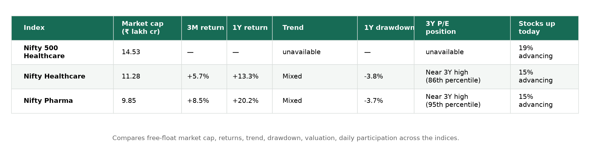
Nifty 500 Healthcare
What it represents: Healthcare companies within the Nifty 500, providing broader sector coverage.
Price: 21,358.10 · Day change: -1.38% · Free-float market cap: ₹14.53 lakh crore (as of 11 September 2026)
_P/E history is unavailable from the configured sources for this index._
Nifty Healthcare
What it represents: Major healthcare businesses, including pharmaceuticals, hospitals and diagnostics.
Price: 16,299.00 · Day change: -1.17% · 50D MA 16,529.18 (-1.39%) · 200D MA 15,266.78 (+6.76%) · Free-float market cap: ₹11.28 lakh crore (as of 11 September 2026)
Price
Price return shows how much the instrument rose or fell over each period. Current read — 3M: +5.7% · 1Y: +13.3% · 3Y: +67.6%.
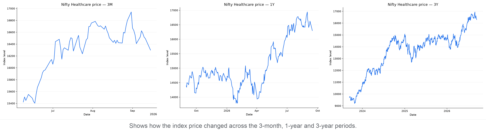
P/E
P/E compares index price with constituent earnings; the percentile shows where today's valuation sits within each period.
3M: 42.71 versus 43.01 median, 40th percentile (below the middle)
1Y: 42.71 versus 37.95 median, 84th percentile (upper end)
3Y: 42.71 versus 38.76 median, 86th percentile (upper end)
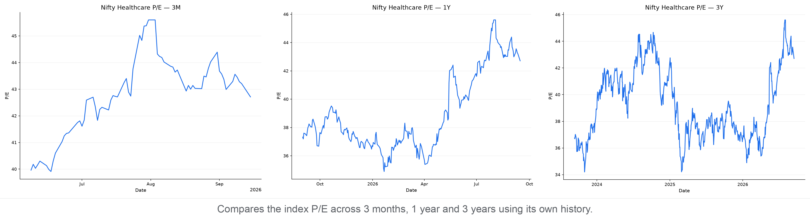
P/B
P/B compares index price with constituent book value; the percentile shows where today's P/B sits within each period.
3M: 5.28 versus 5.54 median, 1st percentile (lower end)
1Y: 5.28 versus 5.49 median, 7th percentile (lower end)
3Y: 5.28 versus 5.66 median, 13th percentile (lower end)
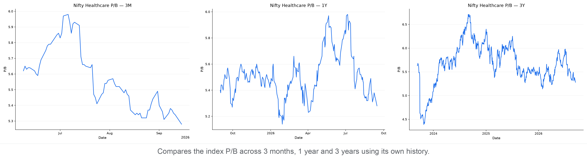
Moving Averages
The 50-day average shows the shorter trend and the 200-day average shows the longer trend. Current read — -1.4% versus the 50-day average; +6.8% versus the 200-day average; the 50-day is above the 200-day (bullish alignment).
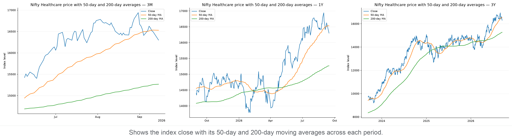
Support & Resistance
Zones use confirmed five-bar swing points clustered into 0.5% price bands; distances are measured from today's close.
3M: support 16,033–16,214 (0.5% below); resistance 16,344–16,426 (0.3% above)
1Y: support 16,085–16,214 (0.5% below); resistance 16,344–16,426 (0.3% above)
3Y: support 16,085–16,214 (0.5% below); resistance 16,344–16,426 (0.3% above)
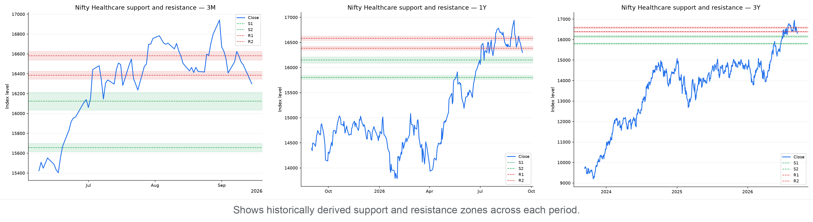
Drawdown
Drawdown is the percentage below the highest close reached within each chart's own period. Current pullback in context:
3M: Now 3.8% below peak · Worst 3.8% · At this level or lower on 1% of 70 trading days
1Y: Now 3.8% below peak · Worst 8.3% · At this level or lower on 19% of 258 trading days
3Y: Now 3.8% below peak · Worst 15.9% · At this level or lower on 31% of 746 trading days
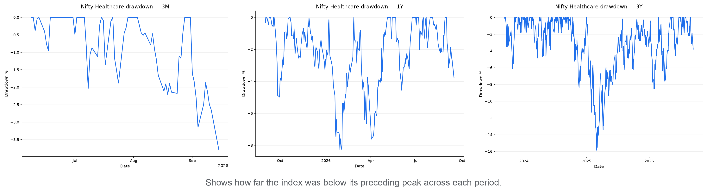
Nifty Pharma
What it represents: Listed pharmaceutical manufacturers and related drug businesses.
Price: 26,188.40 · Day change: -1.30% · 50D MA 26,330.67 (-0.54%) · 200D MA 23,915.63 (+9.50%) · Free-float market cap: ₹9.85 lakh crore (as of 11 September 2026)
Price
Price return shows how much the instrument rose or fell over each period. Current read — 3M: +8.5% · 1Y: +20.2% · 3Y: +71.1%.
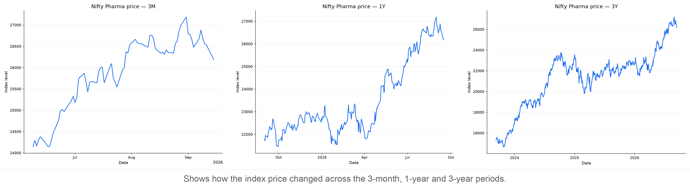
P/E
P/E compares index price with constituent earnings; the percentile shows where today's valuation sits within each period.
3M: 40.55 versus 40.70 median, 47th percentile (below the middle)
1Y: 40.55 versus 34.00 median, 86th percentile (upper end)
3Y: 40.55 versus 34.37 median, 95th percentile (upper end)
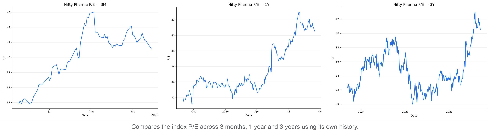
P/B
P/B compares index price with constituent book value; the percentile shows where today's P/B sits within each period.
3M: 4.92 versus 5.10 median, 1st percentile (lower end)
1Y: 4.92 versus 4.93 median, 49th percentile (below the middle)
3Y: 4.92 versus 5.11 median, 32nd percentile (below the middle)
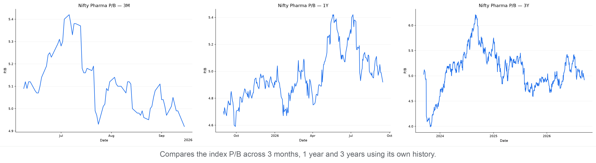
Moving Averages
The 50-day average shows the shorter trend and the 200-day average shows the longer trend. Current read — -0.5% versus the 50-day average; +9.5% versus the 200-day average; the 50-day is above the 200-day (bullish alignment).
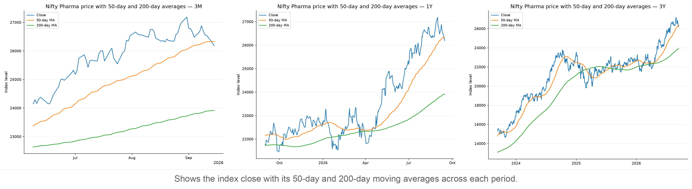
Support & Resistance
Zones use confirmed five-bar swing points clustered into 0.5% price bands; distances are measured from today's close.
3M: support 25,393–25,615 (2.2% below); resistance 26,302–26,506 (0.4% above)
1Y: support 25,393–25,615 (2.2% below); resistance 26,302–26,506 (0.4% above)
3Y: support 25,393–25,615 (2.2% below); resistance 26,302–26,506 (0.4% above)
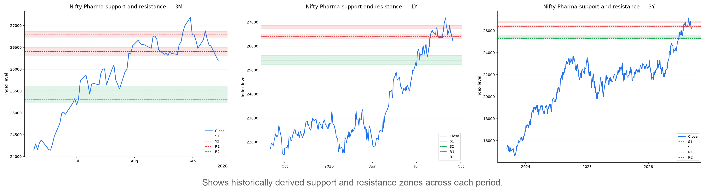
Drawdown
Drawdown is the percentage below the highest close reached within each chart's own period. Current pullback in context:
3M: Now 3.7% below peak · Worst 3.7% · At this level or lower on 1% of 70 trading days
1Y: Now 3.7% below peak · Worst 7.5% · At this level or lower on 18% of 258 trading days
3Y: Now 3.7% below peak · Worst 16.7% · At this level or lower on 48% of 746 trading days
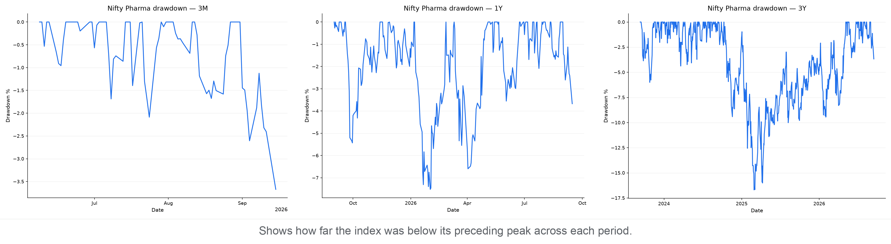
Market Breadth by Index
Market breadth counts how many constituents rose, fell, or were unchanged. It shows whether an index move has broad participation or is being driven by relatively few stocks; it is useful confirmation, not a prediction.
- Nifty 500 Healthcare: 9 advanced, 39 declined, 0 unchanged — broadly negative (A/D ratio 0.23).
- Nifty Healthcare: 3 advanced, 17 declined, 0 unchanged — broadly negative (A/D ratio 0.18).
- Nifty Pharma: 3 advanced, 17 declined, 0 unchanged — broadly negative (A/D ratio 0.18).
Breadth Snapshot
Green shows advancing constituents, red declining constituents, and grey unchanged constituents.
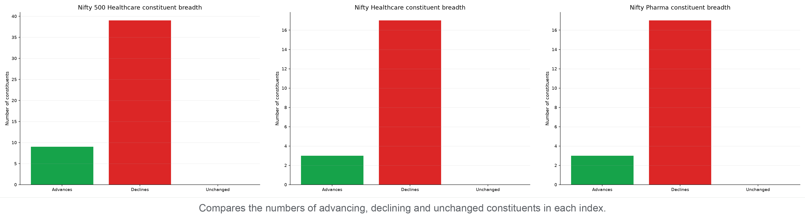
Sources
- NSE India
- Index price history: https://www.nseindia.com/api/historicalOR/indicesHistory
- Free-float market capitalization: https://www.nseindia.com/index-tracker/NIFTY%2050
- Index snapshot and market breadth: https://www.nseindia.com/api/allIndices
- Nifty Indices
- Historical P/E and P/B data: https://www.niftyindices.com/BackPage/getpepbHistoricaldataDBtoString